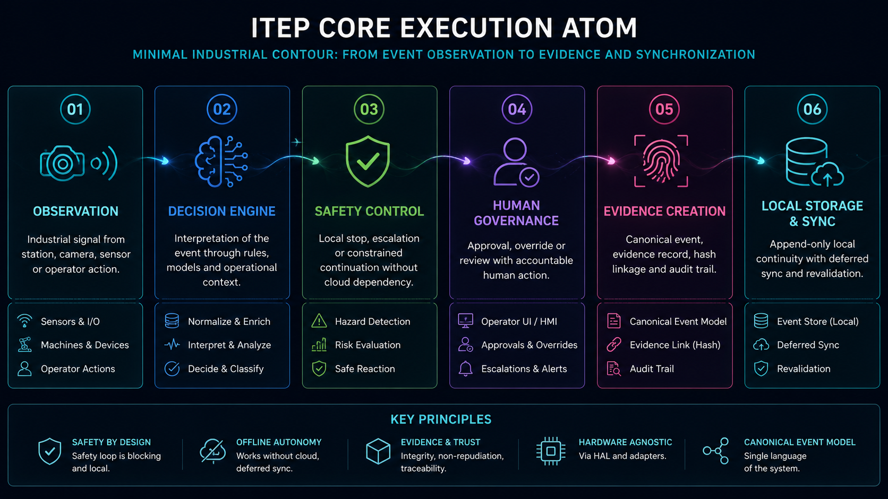
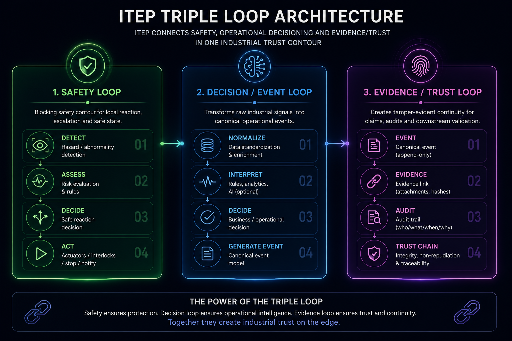
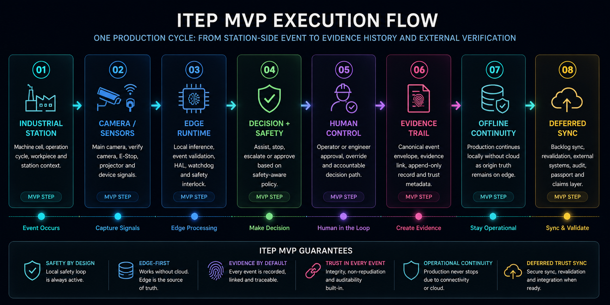

ITEP превращает производственные события в доверенные цифровые факты
Edge-first платформа для промышленности, где safety, evidence и audit trail встроены в ядро системы, а не добавлены после.
Для инвесторов, банков, страховых компаний и industrial-партнёров: ITEP создаёт trust-layer для производственных процессов, цифровых паспортов, claims, аудита и внешней проверки.
В промышленности дефицит доверия
Производственные события трудно доказать
Логи можно редактировать
Зависимость от облака создаёт операционные риски
Уверенность ИИ не равна безопасности
ITEP создаёт доверенный слой производственных фактов
Доверенный слой промышленных событий
Непрерывность доказательств
Среда выполнения с приоритетом границы
Архитектура, устойчивая к отключениям
Архитектура вкратце
Core Execution Atom

Minimal industrial unit from observation to trusted event and sync.
Triple Loop Architecture

Safety, decision and trust combined into one industrial contour.
MVP Execution Flow

Real production cycle from machine event to verified evidence and sync.
Почему ITEP становится актуальным именно сейчас
Автоматизация промышленности растёт быстрее, чем доверие к производственным данным.
Цифровому производству нужны доказуемые события
Производственные операции, контроль качества и критичные решения требуют подтверждаемых фактов, а не редактируемых operational logs.
Industrial AI создаёт проблему ответственности
AI-модели не могут быть единственным источником решений в safety-critical среде без human governance и evidence continuity.
Автономность без облака становится критичной
Производство не может полностью зависеть от доступности облака для safety, operational truth и принятия решений.
Страхование, аудит и claims требуют доверенных данных
Банки, страховые компании и industrial-партнёры всё чаще требуют подтверждаемую историю операций и traceability.
Создание слоя доверия для промышленных операций
ITEP разработана для пилотных испытаний, стратегического партнёрства и обсуждения инвестиций.
Email: s06621848@gmail.com